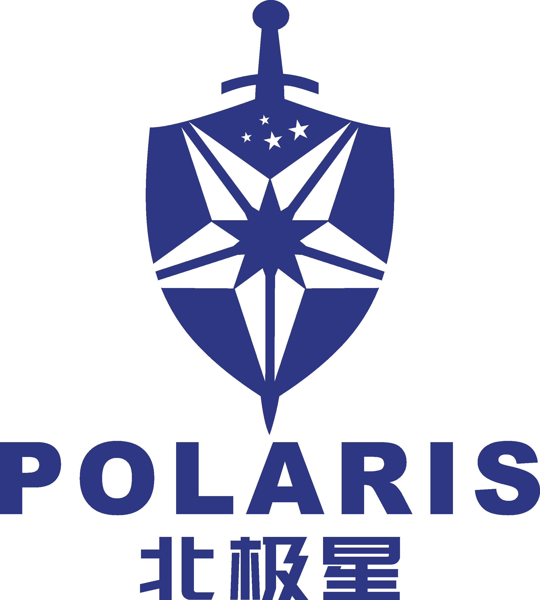

信工所北极星团队 北极星团队隶属于中科院信工所，是一支工程、科研、实战结合紧密的网络安全研究力量。
|
||
 |
团队主要包括三个研究方向: 1、高级威胁检测发现与溯源，指导老师包括刘峰研究员(博导)，王文副研究员，挂靠信安国重进行招生与培养; 2、人工智能与模式识别(包括行为检测、图网络挖掘、深度伪造)，指导老师包括张晓宇副研究员(博导)，挂靠第二研究室进行招生与培养； 3、网络对抗理论与技术研究。指导老师包括陈华山副研究员、王鹏老师，挂靠第六研究室进行招生与培养。 | |
|
研究方向和内容规划瞄准国家战略，面向领域亟需，紧扣行业热点。以现实任务为驱动，采用三元培养模式--战略、工程、技术三位一体的网安新工科人才培养模式，以综合能力为评价标准，培养具有战略视野高度、重大工程规划和前沿技术创新能力的专业型与综合型网络安全人才。 根据培养目标和方向，可为团队成员提供丰富的基础资源与研究条件，有机会与领域战略科学家包括院士深度交流并接受指导培养，深度参与国家级重大工程与科研项目，参与国际顶级学术交流会议、国家与行业的学术会议。 面向网络安全领域和行业亟需，加强学术界与工业界的交流，为学生提供优秀的学习环境与培养机会，与360、奇安信、安天等安全企业紧密联系，与国家重要应用出口部门紧密合作，有机会参与双方联合培养。 |
||
|
刘峰，中科院信息工程研究所研究员、中国科学院大学网络空间安全学院教授、博士生导师。主要研究方向为网络对抗、网络空间安全战略、密码学。
个人简介： 所带领的研究团队多年来完成的多份战略研究报告，并提交至国家主管部委，部分得到中央领导批示。在国际著名出版社《Springer》出版了本领域的第一部英文专著《Visual Cryptography for Image Processing and Security Theory. Methods. and Applications》，并在科学出版社出版专著《美国网络空间安全体系》，在国际著名国际期刊和国际会议发表学术论文论著80余篇。主持承担国家自然科学基金、国家重点研发计划、中科院战略性先导专项、中科院高端智库试点重大项目等三十余项科研项目。
个人主页:https://fengliu.net.cn 张晓宇，中国科学院信息工程研究所副研究员、博士生导师:中国图像图形学会(CSIG)视觉大数据专委会副秘书长，中国自动化学会(CAA)模式识别与机器智能专委会副秘书长。主要研究方向为人工智能与深度学习、大数据内容安全、计算机视觉与多媒体等。
个人简介： 在相关领域TIP、TIFS、TNNLS、TMM和AAAI、MM、WWW、SIGKDD等国际知名期刊和会议上发表学术论文70余篇；申请发明专利20余项（授权10项）；获得计算机软件著作权10余项；主持和参与国家自然科学基金、国家重点研发计划、国家科技支撑计划、国家242信息安全计划等科研项目10余项。研究成果荣获2019年中国图象图形学学会科学技术奖二等奖、2016年吴文俊人工智能科学技术创新奖二等奖、2018年北京市科学技术协会北京青年优秀科技论文奖三等奖、2017年中国电影电视技术学会影视科技优秀论文奖三等奖、2017年CCCV2017 Best Paper Nominate Award、2009年微软杯IEEE中国学生论文大赛银奖等学术荣誉。
个人主页:http://people.ucas.edu.cn/~XYZ 王文，中国科学院信息工程研究所副研究员，中科院青年创新促进会会员，主要研究方向为高级威胁发现、加密流量分析、网络对抗。
个人简介： 组建信工所北极星高级威胁发现与溯源实战团队，团队首次参加 DataCon2020大赛获得“加密流量分析”、“恶意样本分析”双赛道国内前三的成绩。北极星团队面向实战任务，开展攻关，获得用户单位的应用证明与积极评价。主持和参与国家自然科学基金、中科院战略先导专项、北京市等科研项目10余项。
王鹏，中国科学院信息工程研究所工程师。
个人简介： 主要从事网络安全威胁情报方向的研究。先后参与863重大项目、发改委信安专项、工程院、网信办、军队等项目10余项，主持项目3项，发表论文若干。
陈华山，中国科学院信息工程研究所预聘副研究员，主要研究方向为网络系统安全度量、网络攻防演化博弈、区块链安全等。
个人简介： 2022年信工所优才计划（B类）引进人才。在CSUR、TDSC、TIFS、JPDC、PRE等国际著名学术期刊和会议上发表论文10余篇。两次获得美国德克萨斯大学圣安东尼奥分校研究生院最佳论文奖。与悉尼大学、佐治亚理工学院、普渡大学等多个高校建立稳定的合作关系。
个人主页:https://chenhuashancs.github.io/ | ||
|
北京信息科技大学、北京邮电大学、国际关系学院、华东理工大学、信息工程研究所、电子六所、中铁信息工程集团、CNCERT、中移动、360、中国石油、绿盟、华为、腾讯、百度、美团、字节跳动、微软中国、UMASS、UTSA。
| ||
|
欢迎对以下方向有扎实基础的申请人:网络安全，漏洞挖掘，人工智能。
申请人要求有Mathematics/EE/CS或相关背景，有信息安全/网络安全研究背景为佳。
高级威胁检测发现与溯源方向要求申请人对网络攻防技术具有浓厚的兴趣，具备样本逆向分析、网络流量分析、人工智能应用基础者优先。
申请人应具备良好团队合作意识，具备大型CTF、数据竞赛经验及获奖者优先。
| ||
|
如果你对以上信息感兴趣，请把你的简历、成绩单、个人陈述等材料发到以下邮箱:
王强(wangqiang3113#iie.ac.cn)
北极星团队欢迎你的加入!
| ||